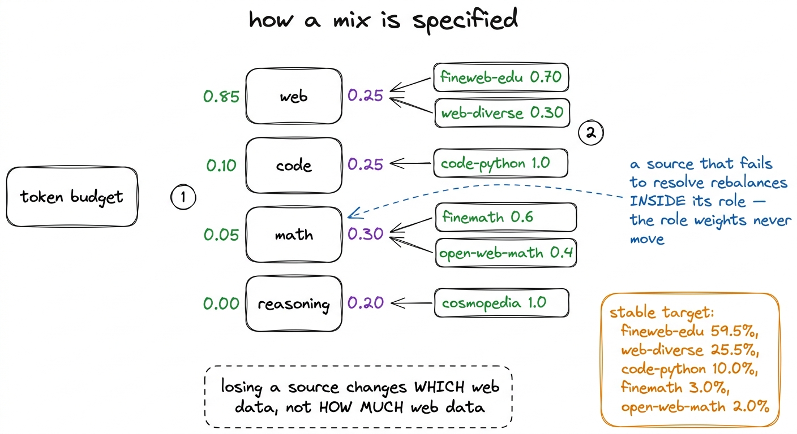
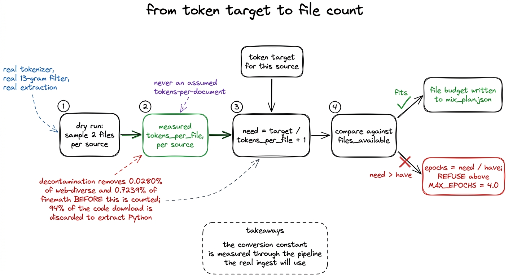
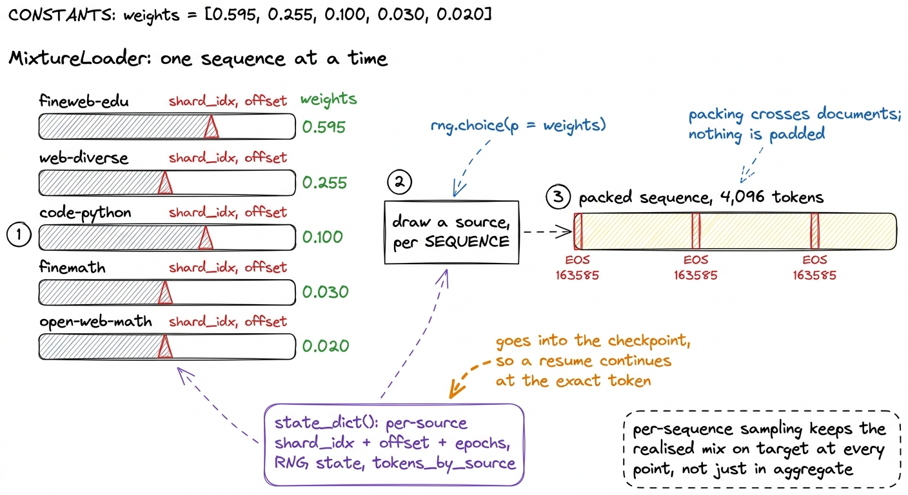
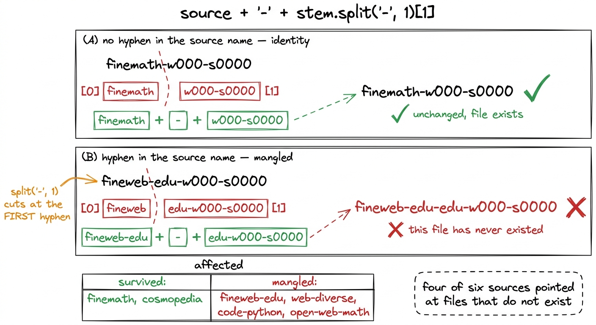
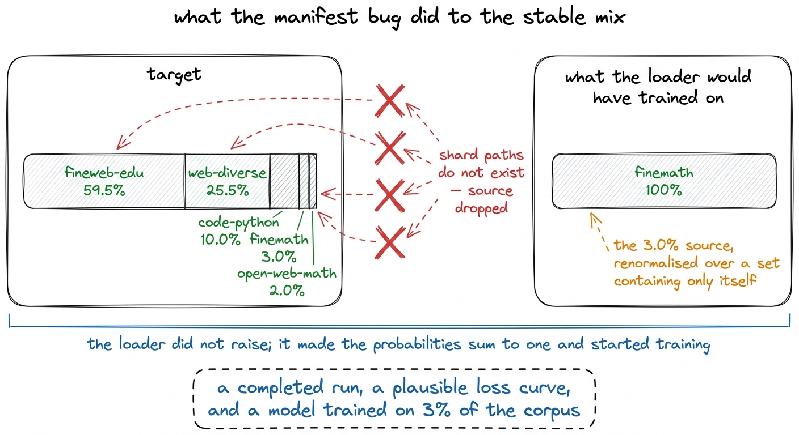
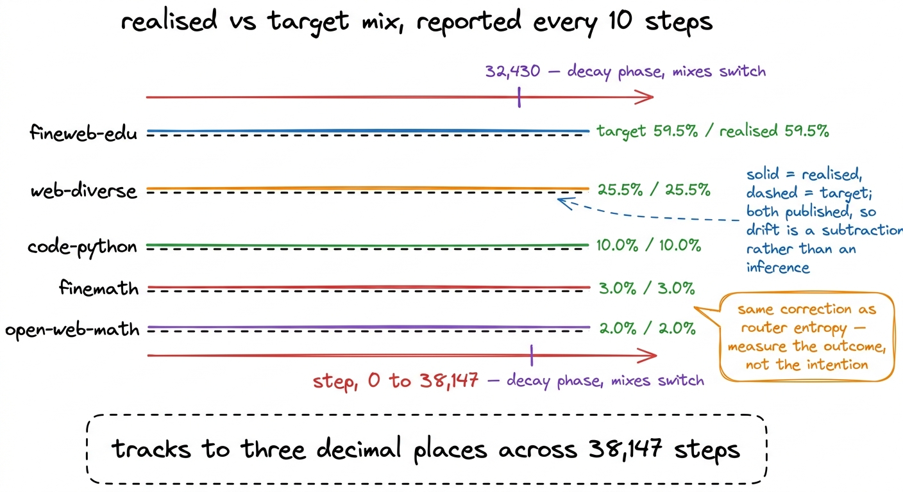

The mix, and the bug that would have trained on one source
Stable and decay mixes built from measured tokens-per-file, and a string-splitting bug that pointed four of six sources at files that did not exist while the loader silently renormalised onto the two that survived.
A corpus is not a training set until something decides how much of it the model sees, and when. Ours is 104.80 billion tokens in 1,063 shards across six sources, and the run consumed 5.00 billion of them. Which 5.00 billion, and in what proportions, is the mix.
There are two mixes rather than one, because the schedule has two phases. WSD holds the learning rate flat through a long stable phase and decays it over the final 15%, and the data switches at the same boundary: general web through the stable phase, then maths, code and synthetic reasoning through the decay. The stable mix in r1's run was 59.5% fineweb-edu, 25.5% web-diverse, 10.0% code-python, 3.0% finemath and 2.0% open-web-math.
Those five numbers are the subject of this chapter twice over: how they were arrived at, and the period during which they were a fiction that every dashboard in the system would have kept reporting while the model trained on one source.
Mixes are specified over roles, not over sources
The natural way to write a mix is a dictionary from source name to weight. We did not do that, because of what happens when a source disappears. Two of the six repositories we wanted were gated, and one of them never cleared. Specified directly over sources, losing one means either hand-editing every weight or letting the survivors absorb the gap in whatever proportions renormalisation produces, which would have quietly changed how much web data the model saw.
So a mix is specified at two levels: weights over roles, and weights over the sources that fill each role.
# Stage 3: ~2% warmup, long stable phase, final ~15% decay.
DECAY_FRACTION = 0.15
STABLE_ROLES = {"web": 0.85, "code": 0.10, "math": 0.05, "reasoning": 0.00}
DECAY_ROLES = {"web": 0.25, "code": 0.25, "math": 0.30, "reasoning": 0.20}
SOURCE_WEIGHTS = {
"web": {"fineweb-edu": 0.70, "web-diverse": 0.30},
"code": {"code-python": 1.0},
"math": {"finemath": 0.6, "open-web-math": 0.4},
"reasoning": {"cosmopedia": 1.0},
}
# Above this we are re-showing the same tokens rather than adding information.
MAX_EPOCHS = 4.0A source going missing now rebalances inside its own role and leaves the role weights untouched. If web-diverse had failed to resolve, fineweb-edu would have absorbed its 30% of the web role and the model would still have seen 85% web during the stable phase. The planner records a warning when this happens rather than doing it silently, a distinction this chapter returns to.
The stable mix quoted above falls straight out of these constants: 0.85 × 0.70 = 0.595 for fineweb-edu, 0.85 × 0.30 = 0.255 for web-diverse, 0.10 for code-python, and the maths role's 0.05 split 0.6 / 0.4 into 0.030 and 0.020. Cosmopedia carries the reasoning role, weighted zero during the stable phase, so it appears in one mix and not the other.

figure rendering · The mix is weights over roles, then weights over the sources filling eThe file budget comes from a measurement, not an estimate
A mix in tokens has to become a mix in files, because files are what the ingest workers download and tokenize. The conversion needs tokens-per-file, and there are two ways to get it.
The convenient way is to assume a tokens-per-document figure, multiply by the rows in a parquet file, and move on. That number is wrong in three directions at once. Tokenizers differ, and a document costs a different number of tokens under K3's 163,840-entry BPE than under any other. Decontamination removes documents before they are counted, at a rate varying from 0.0280% on web-diverse to 0.7239% on finemath. And it is wrong for code-python by an order of magnitude, because the ungated fallback repository keeps every language in one directory and 94% of what was downloaded was discarded to extract Python.
The measured way is a dry run. Before the real ingest, a sampling pass reads two files per source through the full pipeline, with the real tokenizer, the real 13-gram filter and the real extraction, and records what came out the other end.1 The dry run also produces the per-benchmark hit counts that later became the HumanEval investigation. Its job here is narrower: how many tokens does one file of this source actually contribute, after everything that removes tokens has run. The file budget is then arithmetic over those measurements:
def file_budget(p, tokens_per_file, files_available):
"""`tokens_per_file` comes from the dry run — measured,
post-decontamination, with this tokenizer. Assuming it is the trap."""
for src, want in p["source_tokens"].items():
tpf = tokens_per_file.get(src)
if not tpf:
notes.append(f"{src}: no measurement, cannot size the file budget")
continue
need = int(want / tpf) + 1
have = files_available.get(src, 0)
if have and need > have:
epochs = need / have
...Two properties of that function are deliberate. A source with no measurement produces a note and no allocation, rather than a plausible guess. And when the budget asks for more files than exist, the code computes the implied epoch count and refuses above MAX_EPOCHS = 4.0, because a small model trained repeatedly on the same subset memorises it instead of learning from it.

figure rendering · The file budget. Every quantity in it is measured under the conditionsReserving the decay shards first
The manifests are built over the shards that exist on the volume, and the decay phase is allocated before the stable phase rather than after, because the anneal is the smaller and more valuable claim. If the decay phase re-showed tokens the model had already seen, the final 15% of training would be a second epoch over familiar data rather than fresh maths and code, and the benchmark movement it is supposed to produce would be attributable to neither. So decay shards are taken from the tail of each source's shard list, the stable phase gets what remains, and disjointness is asserted rather than assumed:
stable_names = {n for s in phases["stable"]["sources"].values() for n in s["shards"]}
decay_names = {n for s in phases["decay"]["sources"].values() for n in s["shards"]}
overlap = stable_names & decay_names
if overlap:
raise AssertionError(
f"{len(overlap)} shards appear in both phases — the anneal would "
"re-show tokens from the stable phase")The manifests are 947 stable shards and 94 decay shards, with the assertion passing.
What the loader does with them
The dataloader reads the two manifests and produces packed sequences at 4,096 tokens. Three of its properties matter to the rest of the run.
Sampling is per sequence, not per shard. For every sequence, the loader draws a source from the mix weights and takes the next 4,097 tokens from that source's cursor. Reading one shard to exhaustion before moving to the next would give the model hours of pure code followed by hours of pure web, which is a curriculum nobody chose. Per-sequence sampling keeps the realised mix close to the target at every point in training rather than only in aggregate.
Packing crosses document boundaries. Documents are separated by the EOS token, 163585, and sequences are cut at 4,096 regardless of where those boundaries fall. Nothing is spent on padding, and EOS teaches the model where a document ends.
State is explicit. Each source stream carries a shard index, an offset within that shard and an epoch counter; the loader carries its RNG state and per-source token totals. All of it goes into the checkpoint, so a resume continues from the exact token it stopped at rather than restarting the epoch or silently re-showing tokens.2 The chapter on checkpointing covers how this was verified: resume_equivalence trains past a checkpoint twice and compares per-step losses. It found an off-by-one in the checkpoint's step label, and after the fix the first resumed step is bitwise identical at 0.00e+00.

figure rendering · The loader. Sources are sampled for each sequence, sequences are packeThe bug
The manifest builder walks the .json sidecars on the volume, one per shard, recording each shard's name, token count and path. An earlier version did not use the sidecar's filename directly. It rebuilt the name:
name = source + "-" + stem.split("-", 1)[1]The intent was normalisation: take the source, take everything after the first hyphen, reassemble. On a source whose name has no hyphen this is the identity function. finemath-w000-s0000 splits into finemath and w000-s0000, and reassembles unchanged.
On a source whose name contains a hyphen it is not. fineweb-edu-w000-s0000 splits at the first hyphen, into fineweb and edu-w000-s0000, and reassembling with the full source name gives fineweb-edu-edu-w000-s0000, a file that has never existed.
Four of our six source names contain a hyphen. Two do not.

figure rendering · The rebuild is the identity function on unhyphenated names, which is wNow consider what a dataloader should do when a manifest names a file that is not there.
The failure that was not a crash
The loader's original behaviour was to skip what it could not find. For each source it built the list of shard paths, filtered to the ones that exist, dropped any source left with nothing, renormalised the weights over whatever remained so the probabilities still summed to one, and started training.
That is a reasonable thing for a loader to do if the goal is to keep going. Applied here, with four of six sources resolving to nonexistent paths, the stable mix's five sources reduce to one: cosmopedia is weighted zero during the stable phase, and finemath is the only other unhyphenated name. Its 3.0% weight, renormalised over a set containing only itself, becomes 100%.
The entire stable phase would have trained on finemath.

figure rendering · The intended stable mix and the mix the run would actually have used.This is the class of bug that concerns us most in this project, and it is worth naming precisely why.
A crash is a good outcome. It costs an hour and tells you where to look. A wrong number in a report is a middling outcome, because it is at least in a report, where someone may notice it. This bug produces neither. It produces a run that starts normally, trains for 38,147 steps, checkpoints correctly, passes every gate in the monitoring system, ends with a loss curve of the expected shape, and returns a model that is wrong for a reason appearing in none of the metrics being collected.
It would probably have looked better than the real run, too. Our final held-out perplexity by source is 10.24 on finemath against 22.35 on fineweb-edu and 37.74 on web-diverse. A model trained on one narrow maths corpus reports a lower training loss than one trained across six sources, so the number a human watches most closely would have moved in the direction that reads as success. We did not run that experiment, so this is reasoning from the per-source perplexities rather than a measurement. It is enough to make the point: the loss curve is not a control on the data.
Fail loudly on missing inputs
The fix has three parts, and only the first is about the bug.
The name rebuild was deleted. The sidecar's filename is the shard's name, so the manifest builder now uses sidecar.stem directly, with the reason written into the code so nobody normalises it again.
The loader's default behaviour was then inverted. Missing shards are collected during construction, and if any are missing the constructor raises:
# Silently dropping a source and renormalising the rest changes the data
# distribution without changing anything visible. That is how a
# "59.5% fineweb-edu" stable phase became 100% finemath, undetected, in the
# first build of these manifests. Fail loudly by default.
if missing and not allow_missing:
detail = ", ".join(f"{n}: {a}/{b} shards absent"
for n, (a, b) in missing.items())
raise FileNotFoundError(
f"manifest references shards that do not exist ({detail}). "
"Rebuild the manifests, or pass allow_missing=True to proceed "
"with a deliberately reduced mix.")The escape hatch remains, because there are legitimate reasons to train on a subset, such as a smoke test on one downloaded shard. However it now has to be requested by name at the call site, where it is visible in a code review, rather than being the default that arrives when nobody is watching.3 allow_missing=True also stores the missing-shard tally on the loader, so a run that deliberately proceeds with a reduced mix still carries a record of what it dropped.
The third part is telemetry. The loader exposes both the mix it is producing and the mix it was asked for, and the training loop reports both:
"realised_mix": loader.realised_mix(),
# both, so the monitor can gate on drift rather than on a
# human noticing that a share looks wrong
"target_mix": loader.target_mix(),realised_mix() is computed from a per-source token counter incremented as sequences are emitted, so it is the outcome and not the intention. Publishing the target alongside it makes drift a subtraction rather than an inference. This is the same correction we made when router entropy passed a collapsing run: measure the outcome, publish it next to what was asked for, and do not require a person to remember the right value.4 The reporting cadence is ten steps for most of the run, with the first hundred steps at every step and steps 100 to 1,000 at every fifth, because that is when problems appear. At 131,072 tokens per step, a ten-step interval puts 1.3 million tokens between telemetry points.
The evidence that it works
r1's stable phase, realised against target, from the run's own telemetry:
| source | target | realised |
|---|---|---|
| fineweb-edu | 59.5% | 59.5% |
| web-diverse | 25.5% | 25.5% |
| code-python | 10.0% | 10.0% |
| finemath | 3.0% | 3.0% |
| open-web-math | 2.0% | 2.0% |
The realised mix tracks the target to three decimal places, held through the stable phase to step 32,430 and reported across all 38,147 steps. That agreement is a check that the loader draws from the sources it claims to, rather than a result about the data.

figure rendering · The mix telemetry from the completed run. Reporting the target besideThe transferable part
Graceful degradation is a good default in a serving system. A recommendation service that loses one feature store and returns slightly worse recommendations is behaving correctly, because the alternative is returning nothing.
An experiment is not a serving system. When the thing degrading is the experimental setup, a fallback converts a loud failure into a silent one, and silent failures in a $252.35 run are paid for at the end. The loader that skipped missing shards and renormalised applied a serving instinct to a measurement instrument, and it very nearly cost the run its meaning.
Two rules came out of this. Missing inputs raise, and the permission to continue without them is a named argument at the call site. And anything the run is configured to do gets measured and published next to the configuration, so that agreement is observed rather than trusted. Both are cheap: an if statement, and two lines in a telemetry dictionary.
The three distributed bugs in the sharding chapter share this shape, each producing a run that completes and is quietly wrong. This one would have been the hardest to find afterwards, because a model trained entirely on maths would still have produced a falling loss, a full set of checkpoints, and twenty-four benchmark evaluations nobody would have had a reason to doubt.